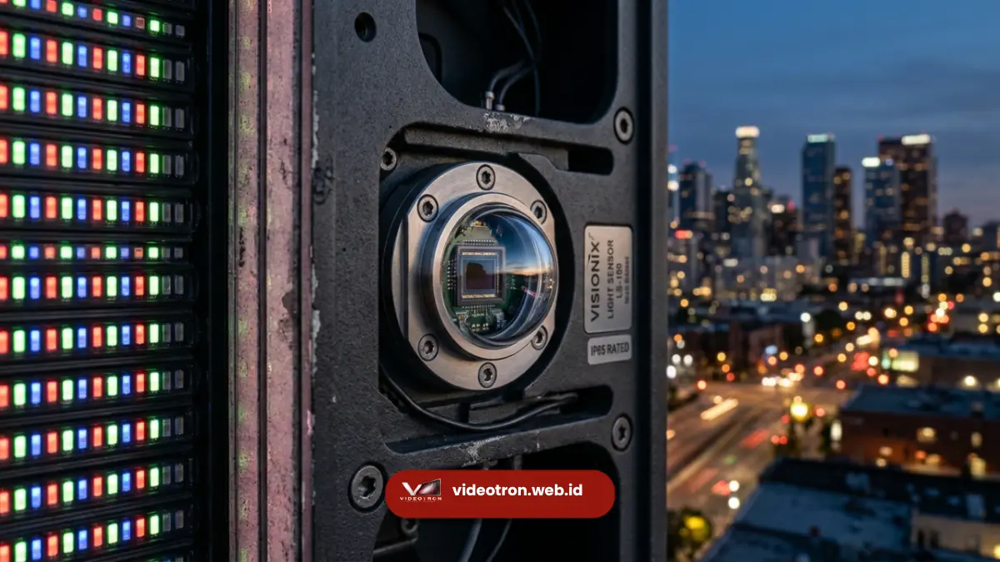

Brightness sensor otomatis adalah komponen elektronik pada videotron yang membaca intensitas cahaya sekitar lalu menyesuaikan kecerahan layar LED secara real-time. Fitur ini membuat tampilan tetap nyaman dilihat baik siang terik maupun malam hari, sekaligus menekan konsumsi listrik.
Videotron modern dituntut tampil optimal dalam kondisi cahaya yang terus berubah sepanjang hari. Tanpa penyesuaian otomatis, layar bisa terlihat terlalu redup saat siang atau menyilaukan saat malam, yang berdampak pada kenyamanan penonton dan efektivitas pesan visual. Brightness sensor otomatis hadir sebagai solusi teknis untuk masalah ini, bekerja layaknya mata elektronik yang terus memantau kondisi lingkungan.
Poin Penting Brightness Sensor Otomatis:
- Brightness sensor otomatis membaca cahaya sekitar dan menyesuaikan kecerahan videotron secara instan.
- Fitur ini menjaga kenyamanan visual audiens tanpa perlu pengaturan manual berulang.
- Videotron dengan sensor cahaya terbukti lebih hemat konsumsi daya dibanding pengaturan kecerahan statis.
- Fitur ini menjadi standar pada videotron outdoor kelas komersial dan instansi.
- Pemilihan videotron dengan brightness sensor otomatis berpengaruh pada umur pakai modul LED.
- 1. Apa Itu Brightness Sensor Otomatis pada Videotron?
- 2. Bagaimana Cara Kerja Sensor Cahaya pada Videotron?
- 3. Mengapa Videotron Membutuhkan Brightness Sensor Otomatis?
- 4. Berapa Besar Potensi Penghematan Energi dari Brightness Sensor Otomatis?
- 5. Faktor yang Perlu Dipertimbangkan Saat Memilih Videotron Ber-Sensor Otomatis
- 6. Kesalahan Umum Terkait Manajemen Kecerahan Videotron
Apa Itu Brightness Sensor Otomatis pada Videotron?
Brightness sensor otomatis adalah sensor cahaya (light sensor atau photocell) yang dipasang pada unit videotron untuk mendeteksi tingkat pencahayaan lingkungan sekitar layar. Data dari sensor ini kemudian diproses oleh sistem kontrol videotron untuk menaikkan atau menurunkan kecerahan panel LED secara otomatis, tanpa campur tangan operator.
Sensor ini umumnya ditempatkan di bagian depan atau sisi atas kabinet videotron agar dapat menangkap intensitas cahaya matahari maupun cahaya buatan secara akurat. Semakin terang lingkungan sekitar, semakin tinggi pula kecerahan layar yang dihasilkan agar konten tetap terlihat jelas. Sebaliknya, saat kondisi gelap, kecerahan diturunkan agar layar tidak menyilaukan mata penonton di sekitarnya. Pada videotron berkualitas, sensor ini terintegrasi dengan sistem kontrol pintar (smart control system) yang memungkinkan penyesuaian bertahap dan halus, bukan perubahan drastis yang mengganggu kenyamanan visual.
Bagaimana Cara Kerja Sensor Cahaya pada Videotron?
Sensor cahaya bekerja dengan membaca nilai lux (satuan intensitas cahaya) di sekitar videotron setiap beberapa detik, kemudian mengirimkan data tersebut ke unit kontrol untuk diproses menjadi perintah penyesuaian kecerahan. Proses ini berlangsung dalam beberapa tahap. Pertama, sensor menangkap perubahan cahaya lingkungan, baik akibat pergerakan matahari, cuaca mendung, maupun pergantian siang ke malam.
Kedua, data cahaya tersebut dikonversi menjadi sinyal digital yang dibaca oleh processor videotron. Ketiga, sistem kontrol menyesuaikan tegangan yang dialirkan ke modul LED sehingga tingkat kecerahan berubah secara proporsional dengan kondisi cahaya sekitar. Videotron kelas komersial umumnya memiliki rentang penyesuaian kecerahan yang luas, mulai dari tingkat rendah untuk kondisi malam hingga tingkat maksimal untuk kondisi siang dengan paparan sinar matahari langsung.

Sensor cahaya pada videotron outdoor menyesuaikan tingkat kecerahan layar dengan kondisi sekitar secara otomatis.Mengapa Videotron Membutuhkan Brightness Sensor Otomatis?
Videotron tanpa sensor cahaya otomatis berisiko menampilkan gambar yang tidak optimal, baik terlalu redup di siang hari maupun terlalu menyilaukan pada malam hari, yang berdampak langsung pada efektivitas pesan visual dan kenyamanan penonton.
Kebutuhan ini menjadi semakin krusial pada videotron outdoor dengan brightness sensor otomatis yang dipasang di area publik seperti pusat kota, gerbang tol, lapangan olahraga, atau fasad gedung perkantoran.
Beberapa alasan utama mengapa fitur ini menjadi pertimbangan penting:
- Kenyamanan visual audiens. Kecerahan yang menyesuaikan kondisi sekitar mencegah efek silau berlebihan pada malam hari, terutama untuk videotron yang berhadapan langsung dengan area lalu lintas atau permukiman.
- Efisiensi konsumsi energi. Videotron yang menyala pada kecerahan maksimal sepanjang waktu mengonsumsi daya listrik lebih besar dibanding videotron yang menyesuaikan kecerahan sesuai kebutuhan aktual.
- Perlindungan terhadap komponen LED. Kecerahan berlebihan secara terus-menerus dapat mempercepat degradasi chip LED. Penyesuaian otomatis membantu menjaga suhu operasional tetap stabil.
- Kepatuhan terhadap regulasi ruang publik. Sejumlah kawasan komersial dan perkotaan menetapkan batas kecerahan reklame luar ruang pada malam hari untuk menghindari polusi cahaya, sehingga fitur ini membantu videotron tetap sesuai standar setempat.
Berapa Besar Potensi Penghematan Energi dari Brightness Sensor Otomatis?
Videotron dengan brightness sensor otomatis dapat menekan konsumsi daya secara signifikan dibanding videotron yang beroperasi pada kecerahan tetap sepanjang hari, karena kecerahan layar disesuaikan secara dinamis dengan kebutuhan aktual.
Berdasarkan data teknis dari sejumlah produsen LED display, layar videotron pada kecerahan penuh (di atas 5000 nit untuk outdoor) dapat mengonsumsi daya dua hingga tiga kali lipat dibanding saat beroperasi pada kecerahan menengah yang cukup untuk kondisi mendung atau malam hari. Konsumsi daya videotron outdoor tanpa manajemen kecerahan otomatis umumnya berkisar antara 600 hingga 800 watt per meter persegi pada kecerahan puncak, sementara dengan penyesuaian otomatis angka ini dapat ditekan secara umum tergantung kondisi cahaya sekitar dan durasi operasional harian.
Tentu saja hal ini sejalan dengan manfaat brightness sensor otomatis bagi videotron bisnis, karena efisiensi ini menjadi pertimbangan penting bagi instansi dan perusahaan yang mengoperasikan videotron dalam jangka panjang, mengingat biaya listrik merupakan komponen operasional yang berulang setiap bulan.
Faktor yang Perlu Dipertimbangkan Saat Memilih Videotron Ber-Sensor Otomatis
Tidak semua videotron memiliki kualitas sensor cahaya yang sama. Beberapa faktor berikut layak menjadi pertimbangan sebelum menentukan pilihan:
- Rentang deteksi sensor, yaitu seberapa luas cakupan intensitas cahaya yang dapat dibaca sensor, dari kondisi gelap total hingga terik matahari langsung.
- Kecepatan respons sistem, yang menentukan seberapa cepat kecerahan layar menyesuaikan perubahan cahaya tanpa terlihat berkedip atau delay mencolok.
- Kehalusan transisi kecerahan, agar perubahan terjadi secara bertahap dan tidak mengganggu kenyamanan visual penonton.
- Integrasi dengan sistem kontrol pusat, sehingga pengaturan dapat dipantau dan disesuaikan lebih lanjut jika diperlukan oleh operator.
- Lokasi pemasangan videotron, karena kebutuhan sensor untuk videotron indoor berbeda dengan videotron outdoor yang menghadapi variasi cahaya lebih ekstrem.
Kesalahan Umum Terkait Manajemen Kecerahan Videotron
Beberapa kesalahan yang kerap terjadi dalam pengelolaan kecerahan videotron antara lain mengatur kecerahan secara manual tanpa penyesuaian rutin, mengabaikan kondisi cuaca yang berubah, serta menyamakan pengaturan videotron indoor dan outdoor padahal kebutuhan keduanya berbeda signifikan.
Pengaturan manual yang statis sering kali membuat operator lupa menyesuaikan kecerahan saat kondisi cuaca berubah drastis, misalnya dari cerah menjadi mendung. Akibatnya, tampilan videotron menjadi kurang optimal dalam jangka waktu tertentu sebelum akhirnya disesuaikan kembali. Videotron dengan brightness sensor otomatis menghilangkan risiko ini karena penyesuaian berjalan secara real-time tanpa perlu intervensi manual.
Brightness sensor otomatis bukan sekadar fitur tambahan, melainkan komponen penting yang menentukan kualitas tampilan, efisiensi energi, dan daya tahan videotron dalam jangka panjang. Bagi perusahaan, instansi, maupun event organizer yang berencana memasang videotron indoor atau outdoor, memastikan unit yang dipilih dilengkapi sensor cahaya otomatis berkualitas adalah langkah yang sangat disarankan agar investasi videotron memberikan hasil optimal.
Tim Videotron.web.id siap membantu Anda menentukan spesifikasi videotron dengan brightness sensor otomatis yang sesuai kebutuhan lokasi dan anggaran. Konsultasikan kebutuhan videotron Anda sekarang melalui videotron.web.id untuk mendapatkan rekomendasi dan penawaran terbaik.

Hawa Nadira
LED Technology Consultant dan Visual Educator
Konsultan dan spesialis solusi display digital berdedikasi tinggi yang fokus membagikan panduan edukatif mengenai penerapan teknologi layar LED videotron untuk kebutuhan interior modern di Indonesia.